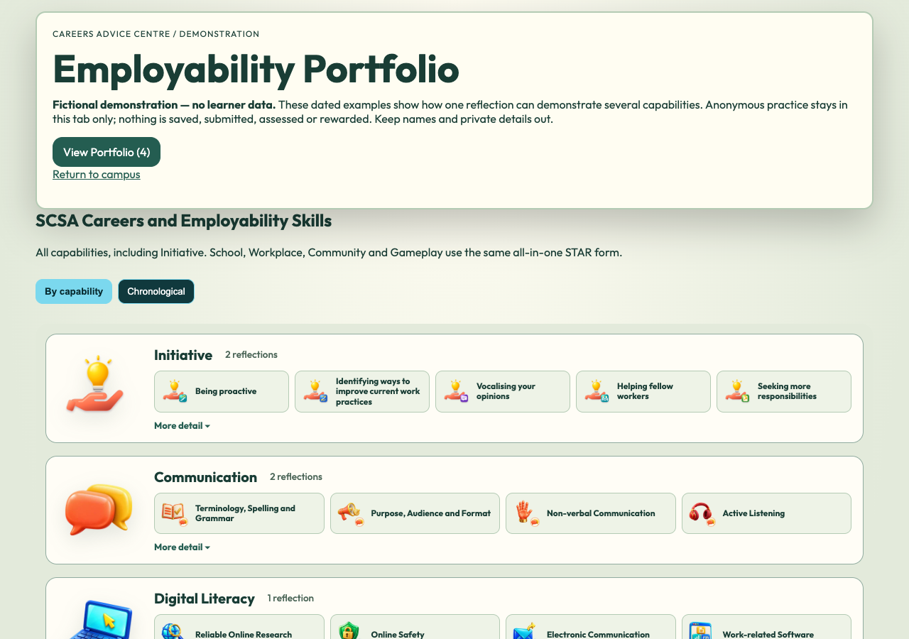
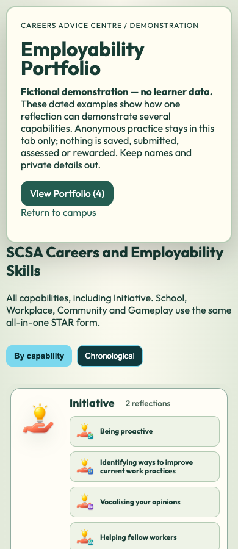
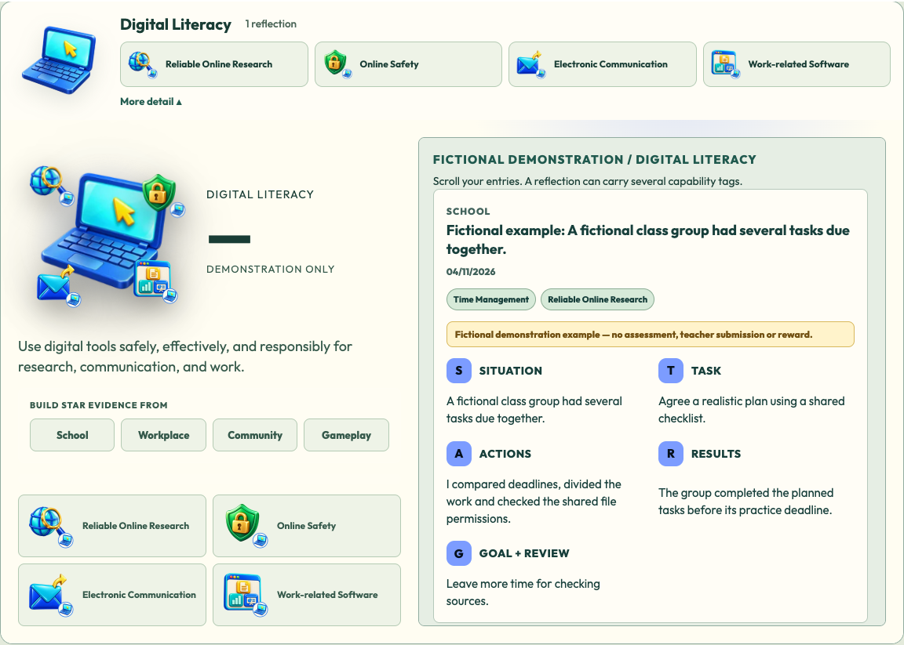
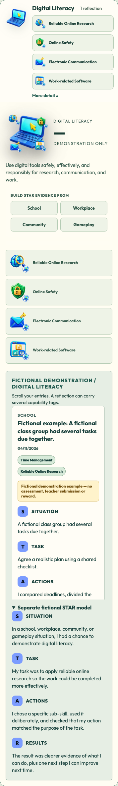

Opened Portfolio palette verified live
Game Portfolio palette correction167 is published and independently verified at the actual Career Empire game, commit 37758691a7fc9f543a9c3f1555c19edd29bd1d9f. All419actual public runtime hashes match. Native Chrome1280/390 directly opens View Portfolio and verifies cream dialog rgb(255,253,242), no navy background image and sage backdrop rgba(193,207,187,0.88), with matching readable heading, statistics, Close and global view controls. Initiative-first illustrated overviews, global capability dropdowns/multi-tag repetition and unique year/month chronology remain. Public Market entry/context/draft/log/PDF and actual Market/map/Notes/Journal/Archon/same-run checks pass. No JavaScript or learner-record behavior changed.
417unit tests/92files and coverage pass;419index assets/109imports pass. Required broad CI source/unit/coverage passed but browser startup could not bind the occupied4273; no completed broad-browser/all-CI-green claim. Safari, physical-device/classroom, real authenticated saving and Tania acceptance remain separate. Separate CIf156c32 is restored staged only; Flyover and unrelated work remain untouched.
CEAWA six-file and SkillQuest two-file candidates are preserved and tested, not published. Automatic approval review rejected the CEAWA publication command before execution because explicit public-deployment approval was missing. No retry, workaround or SkillQuest publication was attempted. Prepared CEAWA scope: nested Old/New Delivery then four routes, separate Archon and Portfolio Entry/View tabs, current all-in-one entry images and direct Careers Centre Portfolio link, personal-project/not-ECC wording, and intact Avatar Studio moved under From campus to3D. SkillQuest keeps its seven original examples and eight marks with the proposed common structure and its own coastal theme.
Tania to check the actual live opened Portfolio and Market/map links. Retain separate Safari/physical-device/classroom acceptance. CEAWA and SkillQuest public deployment still require explicit approval; do not publish or retry them under the game approval.
Current opened Portfolio evidence# Initiative-first illustrated Portfolio overviews and matching palette —13November2026
## Corrected specification
Published465faea has Initiative last and plain closed summaries above a navy page background. The global capability/dropdown/timeline structure is already live and retained.
Initiative is first in the Careers Centre full Portfolio list and modal. Closed overview cards show the existing original capability and subskill logos, labels and reflection counts, with More detail opening the existing compact-left/bounded-right card. The Career Empire demo uses warm cream and sage instead of navy. The global switch, multi-tag repetition, unique year/month chronology and all entry/ownership/privacy behavior are retained. Market Portfolio Entry remains the existing all-in-one form and is distinct from full View Portfolio. Separate SkillQuest and CEAWA updates retain their own examples/styles and are not implied live by this game source review.
## Privacy and preservation
No reflection data fields, storage, authentication/bootstrap, user queries, review queues, permissions, roles, providers, telemetry, awards, retention or account isolation change. Category ordering copies the existing list and never changes the capability bank or records. Existing logo assets only; no new collection or upload. Anonymous/demo input remains tab memory, existing authenticated current-learner/class filtering remains, and protected data functions are byte-identical. New demo body class only changes its visual palette. No school-wide, backend or real account acceptance is inferred.
## Qualification and release limits
Native Chrome1280/390 passes Initiative first in closed overview list; all six Initiative logo assets decode while closed; cream/sage body palette; dropdown expansion and preserved complete left/right geometry; global views, multi-tag repetition and unique year/month chronology; modal equivalent; anonymous practice/reset and zero Storage API/backend/page errors.417unit tests/92files and coverage pass, including stable category ordering/no invented capability tests.419assets/109imports remain. Required broad CI source/unit/coverage passed; browser server could not bind existing4273, so no broad browser completion/all-CI-green claim. The separately qualified165browser Admin-preview failure remains a baseline limitation, not recertified as a new pass.
Unpublished five-file successor to 465faea. Publish exact166source review, genuine unchanged-version receipt and normal guarded game successor; independently verify actual live overview/artwork, preserved Market entry/returns and419assets. Complete the separately requested SkillQuest and nested CEAWA presentation updates from their own exact repositories, preserving seven SkillQuest examples and unrelated local work. Tania/Safari/physical-device/classroom acceptance remain separate.
## Exact source versions
- dashboards/dashboard.css — 100644:e184de8f89f84c5b40f7ad98c2aecf525e6eae56
- dashboards/dashboard.js — 100644:dc80fc725dcfa02c9b30b3956a1f65d2e5a54189
- dashboards/student.html — 100644:9b8768522d8f7a14c83a21e868ec14b5e74a7824
- playable-3d/release-manifest.json — 100644:3a08d462b09a8a54d89fbe195b87a6136bc60297
- tests/unit/portfolio-overview.test.mjs — 100644:f26b10be3acceb92e527394abb814cf9efd018ba

Exact qualified native candidate; publication and Tania acceptance remain separate.
Exact qualified native candidate; publication and Tania acceptance remain separate.
Exact qualified native candidate; publication and Tania acceptance remain separate.
Exact qualified native candidate; publication and Tania acceptance remain separate.